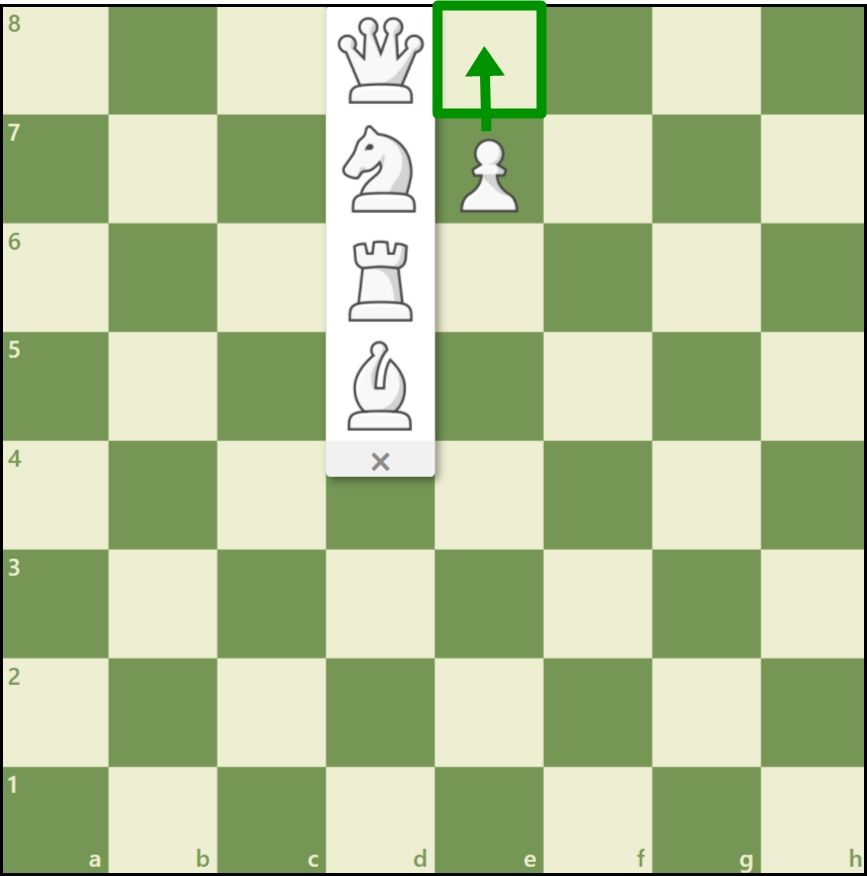
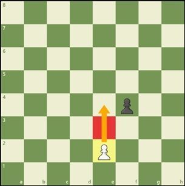
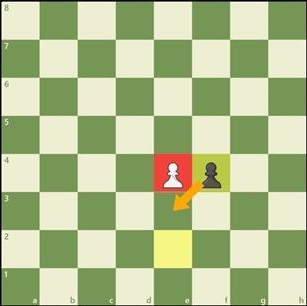
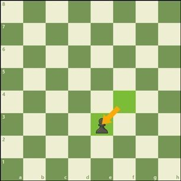
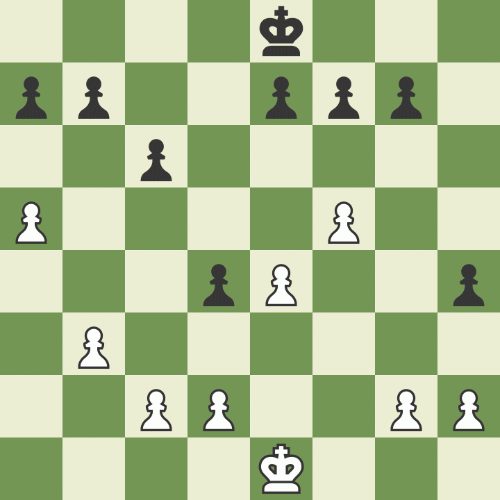
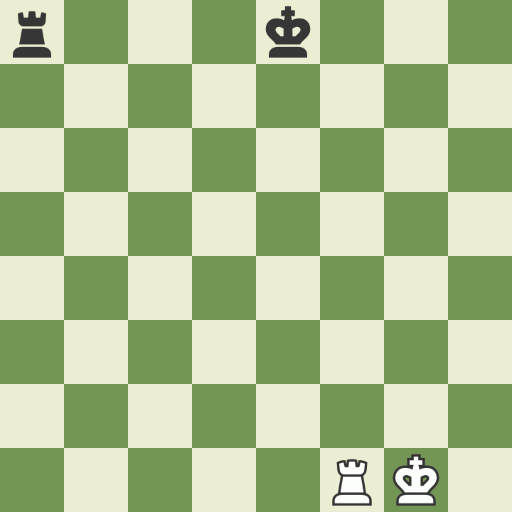

Les règles spéciales des échecs
Il existe quelques règles spéciales aux échecs qui peuvent sembler illogiques au premier abord. Elles ont été créées pour rendre le jeu plus amusant et intéressant.
Promouvoir un pion
Le pion dispose d’un autre coup spécial. Si un pion atteint l’autre bout de l’échiquier, il peut devenir n’importe quelle autre pièce, à l’exception d’un roi.
Ceci s’appelle la promotion. Une idée fausse répandue est qu’un pion promu ne peut être remplacé que par une pièce qui a été capturée : ce n’est PAS vrai. Un pion est habituellement promu en dame. Seuls les pions peuvent être promus.

Prendre « en passant »
La dernière règle concernant les pions s’appelle « la prise en passant ». Lorsqu’un pion avance de deux cases à son premier coup, et ce faisant se retrouve à côté d’un pion de l’adversaire (qui ne peut donc plus le capturer de manière classique), cet autre pion a la possibilité de capturer le premier « en passant », comme s’il ne s’était déplacé que d’une case.
  Ce coup spécial doit être joué immédiatement, dans le tour qui suit le départ du pion pris. Voyez l’exemple ci-dessous pour mieux comprendre cette règle étrange, mais importante.
Le Roque
Une autre règle spéciale des échecs s’appelle le roque. Il vous permet de faire d’une pierre deux coups : mettre votre roi à l’abri (dans la mesure du possible) et faire entrer une tour dans le jeu en la sortant de son coin. Le joueur déplace son roi latéralement de deux cases, puis pose la tour sur la case située immédiatement de l’autre côté de celui-ci. (Regardez l’exemple ci-dessous.) Pour pouvoir roquer, les conditions suivantes doivent toutefois être remplies :
- il doit s’agir du premier déplacement du roi
- il doit s’agir du premier coup de la tour concernée
- pour roquer, aucune pièce ne doit se trouver entre le roi et la tour
- le roi ne peut pas se placer en échec ni traverser une ligne d'échec
En roquant avec la tour la plus proche du roi, vous effectuez un « petit roque ». Si vous utilisez la tour la plus éloignée, en faisant traverser au roi la case de départ de la dame, cela s’appelle un « grand roque ». Quelle que soit la direction du roque, le roi se déplace toujours de deux cases.
